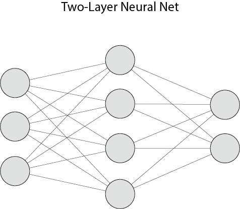
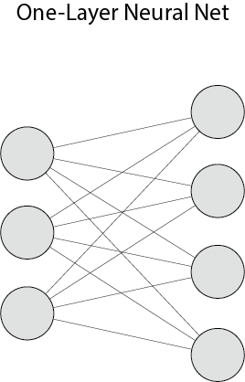
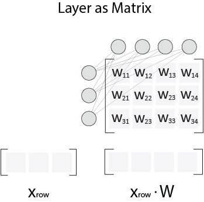
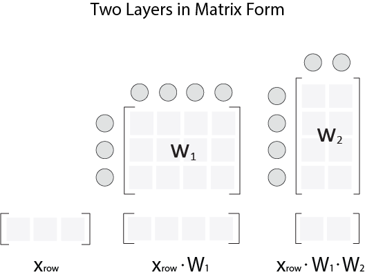
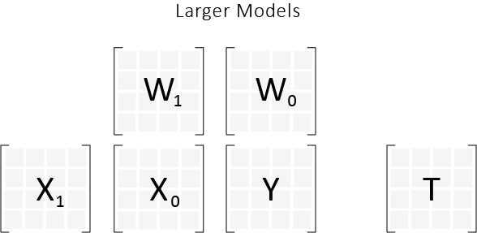
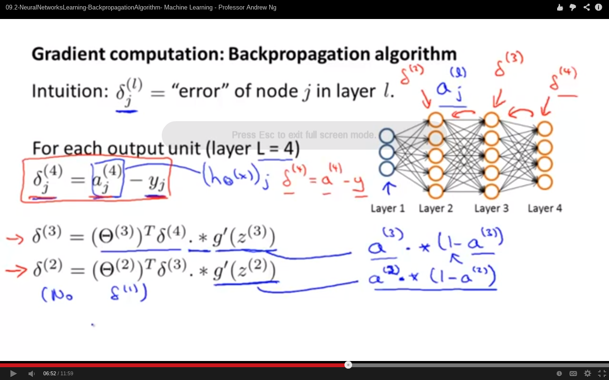
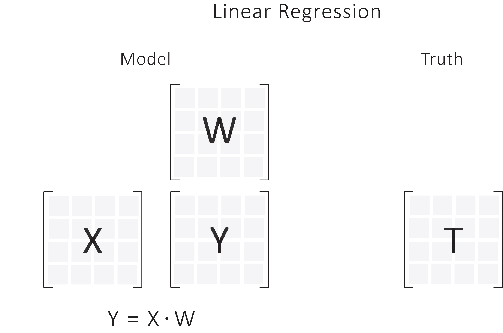
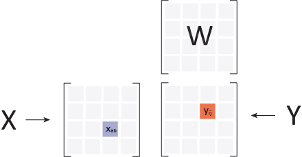
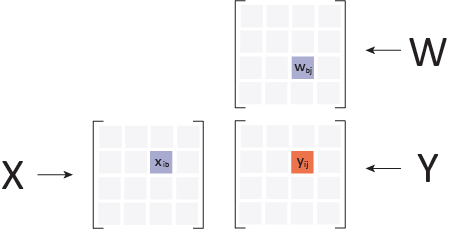

This post assumes you have read and understood the post on linear regression.
Neural Nets
Today we are going to build the framework for neural nets. Well what are neural nets? Here is a picture of one
These are not the only type of neural nets. You can connect nodes to themselves, and have edges that go "backwords". But for right now, I'm restricting my attention to neural nets where every layer is fully connected to the layer right after it. Here is another simpler neural net, that is only 1 layer deep.
Ok, but what does this simple diagram represent? When people talk about neural nets they usually have some input values which they assign to the nodes on the very left. Then these values are passed along each edge to the nodes on the right. In transit though, these values are multiplied by a unique edge value (present in all edges). Afterwards. all of the inputs coming into a node on the right are summed up. Then there is an optional function that is applied to the values in the nodes on the right.
Matrices
If you are anything like me, and you just read the previous paragraph, then you are a white hot ball of rage right now. The reason why you are gnashing your teeth and breaking things, is because you realize this is a colossally verbose and stupidly complex way of multiplying your input by a matrix (and then optionally applying a function). Here is that same picture again, but with the weights in the edges organized in matrix form.
We see that the input row is $x_{row}$, and the output is just $x_{row} \cdot W$ (with optional function). In words, we see that one layer of a neural net is a matrix and a function.
I want you to pause and really ponder the differences between the last two images. The relationship between these two drawings is the relationship between "The Cloud" and "A Server Somewhere". Technically, they are the same thing, but one sounds way sexier. You can write papers about "The Cloud". Very rarely are papers written about "A Server Somewhere". Those papers don't get read, and they don't get grants. So on an intellectual level you can understand maybe how one image became temporarily more popular, but it is impossible to stop that small voice in the back of your head from shouting
Please for the love of all that is green on this Earth, use matrices. It's simpler.
Networks
After creating such a creature, people began stringing them together to make more complicated networks like this. This is simply another layer added after the first layer, to make a larger network.
Correspondingly, my image devoid of riff-raff is
But that is just one input. We can imagine passing in a bunch of inputs at once to create something like this.
So we see pictorially that the model we are creating for neural nets is just a generalization of the models that we have created for linear regression and logistic classification. We just have more internal matrices now (and a wider variety of functions to apply after the dot). Well, I'll be darned!
Like every gradient descent problem, the goal is to update the internal matrices to make Y close to T.
So the next question becomes, how do we update our internal matrices? We can do what we have always done which is just compute the partial derivatives of our error function with respect to every weight, and just walk down in error. That would definitely work. But what about this new-fangled approach called "backpropagation" that sounds so sexy and is all abuzz right now. Well I'm about to let the cat out of the bag
Backpropagation IS the computation of the partial derivatives
Backpropagation
That's right folks! You heard it hear first. They are one in the same. This brings me to one of the things that really bothers me about neural nets/backpropagation, namely that they are shrouded in mysticism. Every time I look up backpropagation, I get a series of arcane steps that are equivalent to medieval alchemy. Here is a screenshot of Andrew Ng's lecture as he begins to describe how the backpropagation algorithm works, linked here (it's on youtube).
The problems here begin with a wildly new notation to represent every node. Then there are these "rules" to compute the "error" of previous nodes. It's unclear where these rules came from. It's also unclear what exactly these "errors" represent (in my derivation, you realize that they are partial derivatives). My favorite part is at moment 4:30, where magically some equations leap onto the screen. Awesome! What I love most in the world are equations with no context!
Look, I get it. I understand that Andrew Ng is trying to sidestep the math, so that we (the reader) can write this mystery code and move on with our day. But ideas are only understood as an extension to our own thinking. Telling someone an answer is not knowledge. Telling someone a story, wherein they can create an answer, is knowledge.
Teachers that tell you the end of a story, are a dime a dozen. Teachers that weave a narrative so compelling that you write the end of the story, are in another league entirely.
All that being said, I think Andrew Ng is a god. Even while I poke fun at his rendition of neural nets, I have benefited greatly from the thousands of things that he has taught me.
His rendition has information. That much can't be said for "backpropagation" as explained by ...
Wikipedia
God have mercy on your soul if you ever try to read the pseudocode for backpropagation on wikipedia. Nothing could be more of an abstraction. I'm surprised they didn't go with something like
def backpropagate():
compute delta for all weights
update weights
I mean, give me a break. How is any newcomer going to learn a damn thing from that "pseudocode". Even looking at the real code is about as clear as mud. This snippet is taken from the python code linked at the bottom of wikipedia.
def backPropagate(self, targets, N, M):
if len(targets) != self.no:
raise ValueError('wrong number of target values')
# calculate error terms for output
output_deltas = [0.0] * self.no
for k in range(self.no):
error = targets[k]-self.ao[k]
output_deltas[k] = dsigmoid(self.ao[k]) * error
# calculate error terms for hidden
hidden_deltas = [0.0] * self.nh
for j in range(self.nh):
error = 0.0
for k in range(self.no):
error = error + output_deltas[k]*self.wo[j][k]
hidden_deltas[j] = dsigmoid(self.ah[j]) * error
# update output weights
for j in range(self.nh):
for k in range(self.no):
change = output_deltas[k]*self.ah[j]
self.wo[j][k] = self.wo[j][k] + N*change + M*self.co[j][k]
self.co[j][k] = change
#print N*change, M*self.co[j][k]
# update input weights
for i in range(self.ni):
for j in range(self.nh):
change = hidden_deltas[j]*self.ai[i]
self.wi[i][j] = self.wi[i][j] + N*change + M*self.ci[i][j]
self.ci[i][j] = change
# calculate error
error = 0.0
for k in range(len(targets)):
error = error + 0.5*(targets[k]-self.ao[k])**2
return error
Now what in the hell is going on here? Lots of things are getting calculated, but there is obviously a breakdown in meaning. What are we computing? And why are we computing it? And is this the best way to do that? This code is warning code about the dangers of not using matrices. I mean just look at it. The author has decided to do matrix operations without using matrix operations.
The beginning
The harder way is easier -- Zed Shaw
Sit down. Take out your pencil and take the partial derivative. Let's derive backpropagation. Someone else did it, and so can you.
Derivative
With two rules you are going to rederive the "backpropagation" algorithm, also known as the "compute partial derivatives" algorithm. You already know one of them. This first rule I call Partial North, and you derived it way back in the post on linear regression.
Basically, you had a model like this.
From this image, you were able to compute $\dfrac{dJ}{dY}$. This quantity is a matrix of size $Y$, where the element at index $(i,j)$ is $\dfrac{dJ}{dy_{ij}}$. I like to think of this matrix as the partials in their correct place. If you are unfamiliar with this notation please read the linear regression post.
From that, you figured out that you could compute $\dfrac{dJ}{dW}$, which is exactly the quantity you needed in order to update your weights.
Partial North
$$\dfrac{dJ}{dW} = X^{T} \cdot \dfrac{dJ}{dY}$$
Now this Partial North calculation implies that you are not applying a function after you dot $X$ and $W$ (which you are not in linear regression). But for more interesting models (like logistic classification and neural nets), you are going to need to factor that into your equation. Don't worry, we do the more general case down below. But before we do the general case, let's do the easy case (assume no function), but let's go west this time.
And so we create the ...
Partial West
To be more specific, you really want to compute the quantity known as $\dfrac{dJ}{dX}$. In a linear regression, this quantity doesn't really make sense, as you can't change your input values. But with larger models, we can vary those internal matrices $X_{k}$ implicitly by changing weights of our internal matrices. Take for example the fact that we can change the values in $X_{0}$, if we vary the values in $W_{1}$ in the image below
Now let's stare at our original linear model picture and compute $\dfrac{dJ}{dX}$ (pretending for the moment that we can actually change $x_{ab}$). Once we compute the partial west, we can recursively use our Partial North and Partial West to generate the derivatives for our weight matrices.
Derivative
What do we know?
$$J = \dfrac{1}{2m} \sum_{i,j} (y_{ij} - t_{ij})^{2} $$
$$\dfrac{dJ}{dx_{ab}} = \dfrac{1}{m} \sum_{i,j} \dfrac{dJ}{dy_{ij}} * \dfrac{dy_{ij}}{dx_{ab}} = \dfrac{1}{m} \sum_{i,j} (y_{ij} - t_{ij})\dfrac{dy_{ij}}{dx_{ab}}$$
To get a sense of that second term consider the following pictures. This analysis is very similar to that done with linear regression.
Given that $X \cdot W = Y$, consider a random element $y_{ij}$, and some equally random element of the $X$ matrix $x_{ab}$. How is $y_{ij}$ changed if we vary $x_{ab}$? It's pretty easy to see that changing $x_{ab}$ has no effect on $y_{ij}$, if $i \neq a$, because they are not in the same row.
If they are in the same row, it is not hard to see that
$$\dfrac{dy_{ij}}{dx_{ab}} = w_{bj}$$ if $a = i$, otherwise it is 0.
So the expression becomes
$$\dfrac{dJ}{dx_{ab}} = \dfrac{1}{m} \sum_{j} (y_{aj} - t_{aj})w_{bj}$$
Because we can set $i = a$. Hmmm... So how can we simplify this expression? Let's consider one element, say $x_{23}$, and imagine what we are summing up to compute that value. Well we can stare at this awesome visualization of that calculation for value $x_{23}$. And if you glare at this for a while, take a swig of strong cognac, and tilt our head to the side, it might become clear to you how to proceed.
What we really want is to dot one row in $\dfrac{dJ}{dY}$ with another row in $W$. So if we take that one row in $\dfrac{dJ}{dY}$ and dot it with the transpose of that row in $W$, we get exactly what we want.
$$\dfrac{dJ}{dx_{ab}} = \dfrac{1}{m} (Y_{a\_} - T_{a\_}) \cdot W_{b\_}^{T}$$
Collecting those terms into a big 'ol matrix we find that
$$\dfrac{dJ}{dX} = \dfrac{1}{m} (Y-T) \cdot W^{T}$$
or more concisely
$$\dfrac{dJ}{dX} = \dfrac{dJ}{dY} \cdot W^{T}$$
This is what I call the West Partial
West Partial
$$\dfrac{dJ}{dX} = \dfrac{dJ}{dY} \cdot W^{T}$$
Woah! Pretty sweet! But these two rules both assume that we are not applying a function after we dot $X$ and $W$. How can we make this generalize?
Well after thinking about the chain rule, and looking over our analysis for linear regression and logistic classification, we realize that every element in $\dfrac{dJ}{dY}$ needs to be multiplied by the derivative $f^{'}$ evaluated at our linear output.
If this seems like a leap, check out the derivation of the logistic classification algorithm, and look at what we multiply our $\dfrac{dJ}{dY}$ by. The link is right here
Generalization
Here we are assuming $Y = f(X \cdot W)$
Generalized North Partial
$$\dfrac{dJ}{dW} = X^{T} \cdot (\dfrac{dJ}{dY} * f^{'}(X \cdot W))$$
Generalized West Partial
$$\dfrac{dJ}{dX} = (\dfrac{dJ}{dY} * f^{'}(X \cdot W)) \cdot W^{T}$$
Note that $\cdot$ is the dot product, and $*$ is an element-wise multiplication. Big difference.
Just for future reference, when I write $\dfrac{A}{B}$ I mean the element-wise division of those two matrices. If I wanted to multiply $A$ by the inverse of $B$, I would write it like this $A \cdot B^{-1}$.
Nice!
And there you have it. The keys to the hovercar. From here, we see that we can recursively use these two rules to take steps west and north. This will create the partial derivative of whatever internal matrix, $W$, that we need. So armed with our two rules, we can now calculate just about anything for this class of generalized models.
Now it might not be obvious just how awesome these rules are just yet. So to make that clear and show how to use them, let's recreate all of the math for all of the models that we have build up to this point.
Linear Regression with Squared Error
We know that $$\dfrac{dJ}{dY} = \dfrac{1}{m} (Y-T)$$
$$\dfrac{dJ}{dW} = X^{T} \cdot \dfrac{dJ}{dY} = \dfrac{1}{m} X^{T} \cdot (Y - T)$$
Logistic Classification with Cross-Entropy Error
What is $\dfrac{dJ}{dY}$ for cross entropy error?
In the logistic regression post, we derived that
$$\dfrac{dCE(y_{ij}, t_{ij})}{dy_{ij}} = \dfrac{y_{ij} - t_{ij}}{y_{ij}(1-y_{ij})}$$
So every element of $\dfrac{dJ}{dY}$, must be that, so then
$$\dfrac{dJ}{dY} = \dfrac{1}{m} \dfrac{Y-T}{Y(1-Y)}$$
Element-wise division above.
So then we see that
$$\dfrac{dJ}{dW} = X^{T} \cdot \left(\dfrac{dJ}{dY} * Sig^{'}(X \cdot W) \right) = X^{T} \cdot \left( \dfrac{1}{m} \dfrac{Y-T}{Y(1-Y)} * Y(1-Y) \right) = \dfrac{1}{m} X^T \cdot (Y-T)$$
Well that was certainly faster.
Thoughts
The main benefit of all of this stuff is that the math suddenly becomes plug-and-playable. If you wanted to consider a totally different error function, then all you need to do is create the corresponding $\dfrac{dJ}{dY}$, and the rest holds. If you wanted to try a different function $F$ after one of your dots ($X$ and $W$), then you just need to compute $F^{'}(X \cdot W)$, and everything else holds.
Neural Net 2 Layers
Let's say that this Neural net has a sigmoid function attached to both of it's layers. $f = Sig$ in the picture below.

Let's start walking our error back.
Partials End
$$\dfrac{dJ}{dY} = \dfrac{Y - T}{Y(1-Y)}$$
Partial North
$$\dfrac{dJ}{dW_0} = X_0^{T} \cdot \left(\dfrac{dJ}{dY} * Sig^{'}(X_0 \cdot W_0) \right) = \dfrac{1}{m} X_0^{T} \cdot (Y - T)$$
Partial West
$$\dfrac{dJ}{dX_1} = \left(\dfrac{dJ}{dY} * Sig^{'}(X_0 \cdot W_0) \right) \cdot W^{T} = \dfrac{1}{m} (Y - T) \cdot W_0^{T}$$
Partial North
$$\dfrac{dJ}{dW_1} = X_1^{T} \cdot \left(\dfrac{dJ}{dX_1} * Sig^{'}(X_1 \cdot W_1) \right) = \dfrac{1}{m} X_1^{T} \cdot \left((Y-T) \cdot W_0^{T} * X_0(1-X_0)\right)$$
Yes, that last expression is kinda big and ugly. Now, I want you to imagine doing that calculation without matrices. While you may never do this by hand again, it is nice to know that you are basically doing calculus through matrices, and that the rules for propagating partials are ones that you have created. Once you code this up, the alternation of the north and west partials will calculate the update to your internal matrices.
Time to Code
Now this is the fun part. It's time to write the Neural Net. I'll see you next week.
For me: explain partial north, partial west